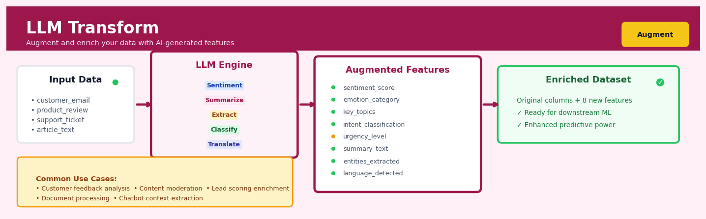

LLM Transform#


The biggest mistake teams make with LLM Transform is treating it like traditional feature engineering and over-engineering prompts for perfect accuracy. Remember that even 80% accurate sentiment or topic extraction can dramatically boost downstream model performance when combined with your existing features. Start simple with one or two augmentations, measure the lift in your target metric, then iterate rather than spending weeks perfecting prompt templates that may not move the needle.
The 60-Second Version#
What it does: LLM Transform reads your text data—reviews, emails, support tickets—and extracts, classifies, or summarises information using AI, adding new columns to your dataset.
When to use it: You have thousands of text records that contain valuable information locked in prose, and manually reading or coding them isn’t feasible.
What you get back: Structured columns you can immediately filter, analyse, or visualise—sentiment scores, category labels, key phrases, summaries, or answers to specific questions you ask.
Difficulty |
Moderate |
Typical runtime |
Minutes on 10K rows (depends on API speed) |
What you bring |
A dataset with at least one text column |
What you get |
New columns with extracted insights or classifications |
Heuristix bucket |
Augment — AI & Language Intelligence |
LLM Transform uses external AI services that incur per-row costs—always test on a sample before processing your full dataset.
Learning Objectives#
After reading this chapter, a business user will be able to:
Identify situations where unstructured text fields (customer feedback, product descriptions, support tickets) contain valuable information that can be systematically extracted or transformed using LLM Transform.
Interpret LLM-generated classifications, summaries, and extracted entities in a dataset, and explain their business implications to stakeholders using concrete examples from the results.
Decide whether LLM Transform output quality is sufficient for a specific business decision (e.g., routing customer complaints, enriching product catalogs) by evaluating consistency and relevance against success criteria.
After reading this chapter, a data scientist will be able to:
Implement LLM Transform on a structured dataset with text columns, including proper handling of missing values, API rate limits, and batch processing requirements.
Configure prompt templates, temperature settings, and model selection to balance output creativity versus consistency based on the specific transformation task (classification vs. generation vs. extraction).
Validate LLM Transform results by spotting common failure patterns (hallucinations, prompt injection, inconsistent formatting) and apply mitigation strategies such as output parsing rules and validation samples.
Overview#
LLM Transform is a node that applies large language model (LLM) inference to structured data, enabling row-wise transformation of text fields through natural language prompts. It belongs to the family of generative AI augmentation methods, where pre-trained foundation models are used to extract, classify, summarise, or synthesise information from unstructured text at scale. The core purpose is to bridge the gap between raw textual data and actionable structured features that can feed into downstream analytics, machine learning pipelines, or business reporting.
When to Use This#
Use LLM Transform when:
Extracting structured entities from free text — Customer feedback, support tickets, or clinical notes contain valuable information (product names, sentiment, urgency levels, diagnoses) that must be converted into categorical or numeric columns for analysis.
Classifying text into business-defined categories — You need to tag records according to a custom taxonomy (e.g., complaint types, lead quality tiers, risk categories) that doesn’t map neatly to off-the-shelf classifiers.
Summarising lengthy documents for reporting — Long-form text such as contract clauses, incident reports, or call transcripts must be condensed into concise summaries suitable for dashboards or executive review.
Generating derived text features — You want to create new text columns (e.g., standardised product descriptions, translated content, reformatted addresses) that require linguistic understanding rather than simple string manipulation.
Enriching records with inferred attributes — The raw data lacks explicit fields (e.g., customer intent, document tone, technical complexity) that can be reasonably inferred by a capable language model.
Prototyping NLP pipelines rapidly — You need to test whether a text-based feature would be predictive before investing in custom model training.
Handling multilingual inputs uniformly — Your data contains text in multiple languages and you need consistent English outputs or language-agnostic classifications.
Do NOT use LLM Transform when:
Deterministic rules suffice — If regex, lookup tables, or simple keyword matching can accomplish the task reliably, they will be faster, cheaper, and more reproducible.
Latency is critical — Real-time applications requiring sub-100ms responses are poorly suited to synchronous LLM inference at scale.
Data contains sensitive PII without appropriate safeguards — LLM providers may log inputs; ensure compliance with data governance policies before sending protected information.
You require perfect reproducibility — LLM outputs can vary across API calls due to temperature settings, model updates, or non-deterministic decoding; critical audit trails may need deterministic alternatives.
Questions This Answers#
Customer Understanding & Feedback Analysis#
What are customers actually complaining about in these 50,000 support tickets?
Which product issues are causing the most frustration, and how urgent are they?
Can we categorize this open-ended survey feedback into themes we can actually track month-over-month?
Are the negative reviews about product quality, shipping delays, or customer service — and which matters most to churn?
What sentiment patterns show up in our NPS comments that explain why promoters love us and detractors don’t?
Content Classification & Operational Efficiency#
How do we route incoming emails to the right department when they’re all just unstructured text?
Can we automatically tag these 100,000 documents by topic, compliance risk, or priority without hiring three more analysts?
Which contracts mention renewal clauses, liability caps, or auto-renewal terms — and can we flag them systematically?
Is this customer inquiry a sales opportunity, a support issue, or a cancellation risk?
What’s the fastest way to extract key information from legal documents, RFPs, or technical specifications at scale?
Insight Extraction & Decision Support#
What are the top reasons cited in our sales lost notes, and are they about price, features, or timing?
Can we summarize 200-page analyst reports into three bullet points our executives will actually read?
Which customer success notes indicate expansion opportunities versus accounts at risk?
What themes appear in employee exit interview comments that we’re missing in our retention data?
How It Works#
Imagine you run a customer support team and receive 10,000 emails every week. Your intern Sarah could read each one and tag it: “billing issue,” “technical problem,” “compliment,” or “urgent.” She could also write a one-sentence summary and rate the customer’s mood from 1 to 5. Sarah would do excellent work—she understands context, reads between the lines, and picks up on subtle emotional cues. But this would take her months. LLM Transform is like hiring 10,000 Sarahs who each handle one email simultaneously, all following the exact same instructions you gave, finishing the entire job in minutes rather than months.
INPUT TABLE LLM TRANSFORM PROCESS OUTPUT TABLE
┌──────┬──────────────────┐ ┌──────┬──────────────┬──────────┬─────────┐
│ id │ email_text │ │ id │ email_text │ category │ sentiment│
├──────┼──────────────────┤ ┌─────────────────────┐ ├──────┼──────────────┼──────────┼─────────┤
│ 1 │ "Your app keeps │────→│ Prompt + Row 1 text │ │ 1 │ "Your app... │ technical│ 2 │
│ │ crashing..." │ │ ↓ │ │ │ │ │ │
├──────┼──────────────────┤ │ [LLM thinks] │ ├──────┼──────────────┼──────────┼─────────┤
│ 2 │ "Thank you for │ │ ↓ │ │ 2 │ "Thank you...│compliment│ 5 │
│ │ the quick..." │ │ Returns: category │ │ │ │ │ │
├──────┼──────────────────┤ │ and sentiment │ ├──────┼──────────────┼──────────┼─────────┤
│ 3 │ "I was charged │ └─────────────────────┘ │ 3 │ "I was... │ billing │ 1 │
│ │ twice for..." │ ↓ │ │ │ │ │
└──────┴──────────────────┘ Process repeats └──────┴──────────────┴──────────┴─────────┘
for each row Two new columns added with LLM output
Step 1: You write the instructions once. You compose a natural language prompt, like “Classify this email into: billing, technical, or compliment. Also rate sentiment 1-5.” You can include examples if you want, just like training a new employee. This prompt becomes the template applied to every row.
Step 2: The system selects a column containing text. You tell LLM Transform which field to analyze—usually something like “email_text,” “review_body,” or “support_ticket.” This becomes the input that gets inserted into your prompt for each row.
Step 3: Each row gets processed independently. For row 1, the system takes your prompt, inserts that row’s text, and sends the complete question to a large language model (a pre-trained AI that’s read billions of web pages and learned patterns in human language).
Step 4: The LLM reads and interprets. The model processes the text just like a human reader would—understanding context, tone, and meaning. It’s not matching keywords; it’s genuinely comprehending what the message is about.
Step 5: The model generates structured output. Based on your instructions, it returns exactly what you asked for: a category label, a sentiment score, a summary, or any other text-based answer. You can configure whether answers should be single words, JSON objects, or free-form text.
Step 6: Results populate new columns. The LLM’s responses get written into new columns in your table, aligned with each original row. You now have structured, analyzable data derived from unstructured text.
Step 7: The process repeats automatically. This happens for row 2, row 3, and every subsequent row—thousands or millions of times—without you writing a single line of code or reading a single email yourself.
The key insight: LLM Transform lets you apply human-level reading comprehension to unlimited amounts of text by expressing your analytical task in plain English rather than programming logic.
The Intuition#
Imagine you have hired a team of intelligent interns to read through ten thousand customer emails and fill out a spreadsheet. Each intern reads one email at a time, interprets the content using their general knowledge and the instructions you provided, then writes their answers into the appropriate columns. Some columns might be categorical (“Was the customer satisfied? Yes/No/Unclear”), some might be free-text summaries (“Summarise the main complaint in one sentence”), and some might be numeric scores (“Rate the urgency from 1 to 5”). The quality of the spreadsheet depends on how clearly you wrote the instructions, how capable the interns are, and whether the task is genuinely within their competence.
LLM Transform automates exactly this process. The “intern” is a large language model—a neural network trained on vast corpora of text that has learned to follow instructions, extract meaning, and generate coherent responses. The “instructions” are your prompt template, which tells the model what to do with each row’s text. The “spreadsheet” is the output dataframe, where new columns contain the model’s responses. Just as you would iterate on your instructions after reviewing a few intern-completed rows, you will iterate on your prompt template after inspecting sample outputs.
The power of this approach lies in the model’s ability to generalise. Unlike a rule-based system that breaks when encountering unexpected phrasing, an LLM can handle paraphrases, misspellings, sarcasm, and domain jargon—much as a human reader would. However, this flexibility comes with trade-offs: LLMs can hallucinate (confidently produce incorrect information), misinterpret ambiguous instructions, or exhibit biases present in their training data. Understanding these limitations is essential to deploying LLM Transform responsibly.
The mental model to carry forward is: LLM Transform is scalable, programmable reading comprehension. You are encoding human judgement into a prompt, then applying that judgement uniformly across your dataset. The technique is most valuable when the judgement requires genuine linguistic understanding—nuance, context, inference—rather than mechanical pattern matching.
The Mathematics#
Problem Setup#
Let \(\mathcal{D} = \{(x_i, \mathbf{c}_i)\}_{i=1}^{N}\) be a dataset of \(N\) records, where \(x_i \in \mathcal{X}\) is a text string (the primary input field) and \(\mathbf{c}_i \in \mathcal{C}\) is a vector of optional context fields (other columns that may inform the transformation). We seek to compute a transformation:
where \(f_\theta\) is a large language model parameterised by \(\theta\), and \(\mathcal{P}\) is a prompt template that specifies the transformation logic.
Prompt Template Formalisation#
The prompt template \(\mathcal{P}\) is a function that maps row data to a complete prompt string:
where \(\mathcal{S}\) is the space of valid prompt strings. In practice, \(\mathcal{P}\) is typically implemented as string interpolation with placeholders:
For example, if \(\mathcal{P} = \) "Classify the sentiment of: {text}. Answer: ", and \(x_i = \) "I love this product!", then \(p_i = \) "Classify the sentiment of: I love this product!. Answer: ".
Autoregressive Generation#
Modern LLMs generate outputs autoregressively. Let \(y_i = (y_i^{(1)}, y_i^{(2)}, \ldots, y_i^{(T)})\) be the sequence of output tokens. The probability of the complete output given the prompt is:
At each step \(t\), the model computes a probability distribution over the vocabulary \(\mathcal{V}\):
where \(z_v\) is the logit for token \(v\) and \(\tau > 0\) is the temperature parameter.
Temperature and Sampling#
The temperature \(\tau\) controls the entropy of the output distribution:
\(\tau \to 0\): Approaches greedy decoding; the model always selects the highest-probability token. Output is deterministic (given identical inputs and model state).
\(\tau = 1\): Standard softmax; probabilities reflect the model’s learned distribution.
\(\tau > 1\): Flattened distribution; increased randomness and diversity.
For classification and extraction tasks where consistency is paramount, use \(\tau \approx 0\) (greedy) or very low values (\(\tau \leq 0.3\)). For creative or generative tasks, higher temperatures may be appropriate.
Token Limits and Truncation#
LLMs have a maximum context length \(L_{\max}\) (measured in tokens). Let \(|p_i|\) denote the token count of the prompt and \(|y_i|\) denote the output length. The constraint is:
If \(|p_i|\) approaches \(L_{\max}\), output generation will be severely truncated or fail. In practice, the platform enforces:
where \(M_{\text{reserved}}\) is the maximum output tokens allocated for the response.
Cost Model#
API-based LLM inference is typically priced per token. Let \(c_{\text{in}}\) and \(c_{\text{out}}\) be the cost per input and output token respectively. The total cost for processing the dataset is:
Optimising prompt length (concise templates) and constraining output length directly reduces cost.
Relationship to Other Methods#
LLM Transform is conceptually related to:
Feature engineering: Both aim to create informative columns from raw data; LLM Transform uses learned linguistic representations rather than hand-crafted rules.
Named entity recognition (NER): A specialised extraction task that LLM Transform can perform, though dedicated NER models may be more efficient for standard entity types.
Text classification: Traditional classifiers (logistic regression, BERT fine-tuned models) require labelled training data; LLM Transform operates zero-shot or few-shot via prompting.
Map operations in functional programming: LLM Transform applies a function (the LLM with prompt) uniformly to each row—a higher-order map over the dataframe.
Assumptions and Limitations#
Model competence: The LLM must possess sufficient world knowledge and instruction-following capability for the task.
Prompt clarity: Ambiguous prompts yield inconsistent outputs; the prompt must unambiguously specify the desired transformation.
Input quality: Garbage in, garbage out—malformed or nonsensical input text will produce unreliable outputs.
Stationarity: The LLM’s behaviour is assumed stable over the dataset; model provider updates may alter outputs over time.
Independence: Each row is processed independently; the model has no memory of previous rows within a batch (unless explicitly included in context).
Understanding the Mathematics#
Token Probability and Next-Token Prediction#
The equation:
Read it aloud:
“The probability of generating token i given all the previous tokens from 1 to i–1 equals the softmax function applied to the weight matrix multiplied by the hidden state vector at position i.”
What each symbol means:
\(P(t_i | \ldots)\) — probability of the next token, conditioned on everything that came before
\(t_i\) — the token (word fragment) the model is trying to predict
\(t_1, t_2, \ldots, t_{i-1}\) — all the tokens that appeared earlier in the sequence
\(\mathbf{W}\) — learned weight matrix that maps internal representations to vocabulary scores
\(\mathbf{h}_i\) — the model’s internal “understanding” at position i, encoded as a vector
softmax — function that converts raw scores into probabilities that sum to 1.0
A concrete numerical example:
Suppose the prompt is “Classify the sentiment:” and the model is deciding the first token of its answer. The hidden state \(\mathbf{h}_i\) produces raw scores: “Positive” = 2.1, “Negative” = 0.8, “Neutral” = 1.3. The softmax converts these: \(e^{2.1}/(e^{2.1} + e^{0.8} + e^{1.3}) \approx 8.17/(8.17 + 2.23 + 3.67) = 0.58\). So \(P(\text{"Positive"}) = 58\%\), \(P(\text{"Negative"}) = 16\%\), \(P(\text{"Neutral"}) = 26\%\). The model samples or picks the highest, yielding “Positive”.
Why this equation matters:
This equation is how an LLM generates any text—it predicts one token at a time by calculating probabilities over its entire vocabulary, and chaining those predictions together is what produces classifications, summaries, or extracted entities.
Expected Cost per Row#
The equation:
Read it aloud:
“The cost to process one row equals the sum of the prompt length and completion length, multiplied by the price per thousand tokens, then divided by one thousand.”
What each symbol means:
\(C_{\text{row}}\) — cost in dollars (or cents) to transform one row
\(L_{\text{prompt}}\) — number of tokens in the instruction plus the input text
\(L_{\text{completion}}\) — number of tokens the model generates in its answer
\(P_{\text{token}}\) — API price per 1,000 tokens (input and output may differ; this is simplified)
A concrete numerical example:
Your prompt template is 80 tokens, the customer review is 120 tokens, so \(L_{\text{prompt}} = 200\). The model outputs a 20-token classification like “Positive – mentions fast shipping.” Total tokens = 220. If \(P_{\text{token}} = \$0.002\) per 1k tokens, then \(C_{\text{row}} = (220 \times 0.002)/1000 = \$0.00044\) per row. For 50,000 rows, total cost = \(50{,}000 \times 0.00044 = \$22\).
Why this equation matters:
Without this calculation you cannot budget an LLM Transform pipeline—processing millions of rows can cost hundreds or thousands of dollars, and this formula lets you estimate before you run.
Temperature and Sampling Distribution#
The equation:
Read it aloud:
“The temperature-adjusted probability of token i equals e raised to the power of its raw score divided by temperature, all divided by the sum of that same exponential function across all tokens.”
What each symbol means:
\(P_T(t_i)\) — probability of token i after temperature adjustment
\(z_i\) — raw logit (pre-softmax score) for token i
\(T\) — temperature parameter (typically 0 to 2)
\(\exp\) — exponential function \(e^x\)
A concrete numerical example:
Raw scores are “Positive” = 2.0, “Neutral” = 1.0. At \(T=1.0\): \(P(\text{Positive}) = e^{2.0}/(e^{2.0}+e^{1.0}) = 7.39/(7.39+2.72) = 0.73\). At \(T=0.5\): \(P(\text{Positive}) = e^{4.0}/(e^{4.0}+e^{2.0}) = 54.6/(54.6+7.39) = 0.88\) (more confident). At \(T=2.0\): \(e^{1.0}/(e^{1.0}+e^{0.5}) = 2.72/(2.72+1.65) = 0.62\) (less confident, more random).
Why this equation matters:
Temperature controls the trade-off between consistency and creativity—set it near zero for deterministic classifications in production pipelines; raise it when you want diverse paraphrasing or brainstormed alternatives.
The Big Picture#
The mathematics of LLM Transform is fundamentally about converting unstructured text into structured predictions via probabilistic next-token generation. This approach was chosen because autoregressive language models—trained on trillions of tokens—encode rich semantic, syntactic, and world knowledge that simpler keyword or rule-based methods cannot match. The softmax and temperature mechanics give us fine-grained control over randomness, the cost formula ensures we can scale economically, and the conditional probability chain is what allows the model to produce coherent multi-token answers like category labels or extracted entities. In one sentence: LLM Transform turns natural-language instructions into a scalable probability engine that reads text and writes structured answers, one token at a time.
Python Implementation#
The following example demonstrates LLM Transform using the OpenAI API to classify customer reviews.
import pandas as pd
import openai
from typing import Optional
# Set your API key (in production, use environment variables)
openai.api_key = "your-api-key-here"
def llm_transform(
df: pd.DataFrame,
text_column: str,
prompt_template: str,
output_column: str,
model: str = "gpt-4o-mini",
temperature: float = 0.0,
max_tokens: int = 100,
context_columns: Optional[list] = None
) -> pd.DataFrame:
"""
Apply LLM inference to each row of a DataFrame.
Parameters
----------
df : pd.DataFrame
Input dataframe containing text to transform
text_column : str
Name of the column containing primary text input
prompt_template : str
Template string with {text} and optional {column_name} placeholders
output_column : str
Name of the new column to store LLM outputs
model : str
OpenAI model identifier
temperature : float
Sampling temperature (0.0 for deterministic)
max_tokens : int
Maximum tokens in the response
context_columns : list, optional
Additional columns to include in prompt context
Returns
-------
pd.DataFrame
Original dataframe with new output column appended
"""
results = []
for idx, row in df.iterrows():
# Build the prompt by substituting placeholders
format_dict = {"text": row[text_column]}
if context_columns:
for col in context_columns:
format_dict[col] = row[col]
prompt = prompt_template.format(**format_dict)
# Call the LLM API
try:
response = openai.chat.completions.create(
model=model,
messages=[{"role": "user", "content": prompt}],
temperature=temperature,
max_tokens=max_tokens
)
output = response.choices[0].message.content.strip()
except Exception as e:
output = f"ERROR: {str(e)}"
results.append(output)
# Add results as new column
df_result = df.copy()
df_result[output_column] = results
return df_result
# =============================================================================
# Example 1: Sentiment Classification
# =============================================================================
# Create synthetic customer review data
reviews_df = pd.DataFrame({
"review_id": [1, 2, 3, 4, 5],
"review_text": [
"Absolutely love this product! Best purchase I've made all year.",
"Terrible quality. Broke after two days. Want my money back.",
"It's okay I guess. Does what it says but nothing special.",
"Fast shipping and great packaging. The item itself is decent.",
"DO NOT BUY. Complete scam. Customer service is non-existent."
],
"product_category": ["Electronics", "Home", "Beauty", "Electronics", "Home"]
})
# Define the classification prompt
sentiment_prompt = """Classify the sentiment of the following customer review.
Respond with exactly one word: POSITIVE, NEGATIVE, or NEUTRAL.
Review: {text}
Sentiment:"""
# Apply the transform
classified_df = llm_transform(
df=reviews_df,
text_column="review_text",
prompt_template=sentiment_prompt,
output_column="sentiment",
temperature=0.0, # Deterministic for classification
max_tokens=10 # Short response expected
)
print("=== Sentiment Classification Results ===")
print(classified_df[["review_id", "review_text", "sentiment"]].to_string())
# =============================================================================
# Example 2: Entity Extraction with Structured Output
# =============================================================================
support_tickets = pd.DataFrame({
"ticket_id": ["T001", "T002", "T003"],
"description": [
"My order #12345 arrived damaged. The screen is cracked. Please send replacement ASAP.",
"I've been trying to reset my password for 3 days. Email verification not working.",
"Billing error: charged $299 instead of $199 for the annual plan. Ref: INV-98765."
]
})
# Extraction prompt requesting JSON output
extraction_prompt = """Extract the following information from the support ticket.
Return a JSON object with these fields:
- issue_type: one of [shipping, account, billing, product, other]
- reference_number: any order/invoice/reference number mentioned, or null
- urgency: one of [low, medium, high] based on language used
Ticket: {text}
JSON:"""
extracted_df = llm_transform(
df=support_tickets,
text_column="description",
prompt_template=extraction_prompt,
output_column="extracted_json",
temperature=0.0,
max_tokens=150
)
print("\n=== Entity Extraction Results ===")
for _, row in extracted_df.iterrows():
print(f"\nTicket {row['ticket_id']}:")
print(f" Description: {row['description'][:60]}...")
print(f" Extracted: {row['extracted_json']}")
# =============================================================================
# Example 3: Summarisation with Context
# =============================================================================
reports_df = pd.DataFrame({
"report_id": ["R1", "R2"],
"department": ["Sales", "Engineering"],
"report_text": [
"Q3 performance exceeded targets by 15%. Key wins include the Henderson account "
"worth $2.3M and expansion into the midwest region. Pipeline remains strong with "
"$8M in qualified opportunities. Headcount increased by 3 with two senior AEs "
"and one SDR. Concerns around competitor pricing pressure in enterprise segment.",
"Sprint velocity improved to 45 story points from 38 last quarter. Deployed v2.3 "
"with OAuth integration and performance improvements. Tech debt reduced by 20%. "
"
## Visualisations


## Using This in Heuristix
### What You'll Need
The LLM Transform node expects a dataset with **at least one text column** containing the content you want to process. This could be customer reviews, support tickets, product descriptions, survey responses—any unstructured text that needs understanding or transformation.
**Example input:**
| customer_id | review_text | purchase_date |
|-------------|-------------|---------------|
| 1001 | The product arrived damaged but customer service was helpful | 2024-01-15 |
| 1002 | Love it! Perfect size and quality exceeded expectations | 2024-01-16 |
**Example output** (after extracting sentiment and topic):
| customer_id | review_text | purchase_date | sentiment | primary_topic |
|-------------|-------------|---------------|-----------|---------------|
| 1001 | The product arrived damaged... | 2024-01-15 | Mixed | Shipping Issue |
| 1002 | Love it! Perfect size... | 2024-01-16 | Positive | Product Quality |
### Configuration Parameters
| Parameter | What It Does | Default | When to Change It |
|-----------|-------------|---------|-------------------|
| **Input Column** | The text field to process | (none) | Select the column containing your unstructured text |
| **Prompt Template** | Instructions telling the LLM what to extract or generate | (blank) | Craft this carefully—it's your instruction to the AI. Be specific about format and content |
| **Output Column Name** | What to call the new column(s) created | "llm_output" | Use descriptive names like "sentiment" or "extracted_category" |
| **Model** | Which LLM to use (e.g., GPT-4, Claude, local model) | Platform default | Use more capable models for complex reasoning; faster models for simple extraction |
| **Temperature** | Controls randomness (0 = deterministic, 1 = creative) | 0.3 | Lower for classification/extraction (0.1–0.3); higher for creative generation (0.7–0.9) |
| **Max Tokens** | Maximum length of generated response | 100 | Increase for longer summaries; decrease for single-word classifications to save costs |
| **Batch Size** | How many rows to process at once | 10 | Larger batches are faster but use more memory; adjust based on text length |
### What You'll Get Back
The node adds **new columns** to your dataset based on your prompt instructions. You'll also see:
- **Processing metrics**: Total rows processed, API calls made, average response time
- **Cost estimate**: Token usage and associated LLM API costs
- **Sample outputs**: Preview of transformed data showing original text alongside new fields
- **Error log**: Any rows that failed processing (API errors, timeouts, parsing issues)
### Quick Start: Sentiment Classification
1. **Connect your data** containing a text column to the LLM Transform node
2. **Select the input column** (e.g., "review_text")
3. **Write your prompt**: "Classify the sentiment of this review as Positive, Negative, or Neutral. Respond with only one word."
4. **Name your output column** "sentiment"
5. **Set Temperature to 0.1** (we want consistent classification)
6. **Set Max Tokens to 10** (we only need one word back)
7. **Run** and review the sample outputs before processing the full dataset
### Connecting Downstream
After transforming your text, you'll typically connect to:
- **Filter/SQL nodes** to segment by extracted categories or sentiment
- **Aggregate nodes** to count frequencies or calculate proportions
- **Visualisation nodes** to chart sentiment distributions or topic clusters
- **ML Feature Engineering** to incorporate the extracted features into predictive models
### Tips from the Trenches
1. **Test your prompt on a small sample first**. Run 10–20 rows before processing thousands—prompt tweaking is normal and expected.
2. **Be explicit about output format**. Instead of "extract key topics," try "extract 1-3 key topics as a comma-separated list." The more structured your request, the easier to parse results.
3. **Use lower temperature for consistency**. When you need the same input to always produce the same output (classification, extraction), keep temperature below 0.3.
4. **Watch your token costs**. Processing 10,000 rows of text can add up quickly. Start with a sample, estimate costs, then scale up.
5. **Chain multiple LLM nodes** for complex tasks. Extract information first, then classify it in a second node—this often works better than one complex prompt trying to do everything.
## Config Recipes
### Recipe 1: Quick Exploration
**When to use:** You're exploring a new dataset with messy text fields and need to understand what information can be extracted without committing to API costs or long run times.
**Settings:**
| Parameter | Value | Why |
|-----------|-------|-----|
| Model | `gpt-3.5-turbo` | Fastest, cheapest option for exploration |
| Temperature | `0.3` | Low enough for consistency, high enough to avoid getting stuck |
| Max tokens | `50` | Caps cost per row; forces concise outputs |
| Batch size | `10` | Small batches for quick iteration and debugging |
| Sample rows | `100` | Enough to spot patterns, not enough to burn budget |
| Retry attempts | `1` | Fail fast when prompts are malformed |
**What you get:** Fast feedback on whether your prompt is working, with minimal cost and a clear sense of output variability.
**Trade-off:** You won't catch edge cases or rare patterns that appear in the full dataset, and some outputs may be truncated.
---
### Recipe 2: Production-Grade Classification
**When to use:** You're deploying a sentiment classifier, category tagger, or entity extractor into a live pipeline where consistency and audit trails matter.
**Settings:**
| Parameter | Value | Why |
|-----------|-------|-----|
| Model | `gpt-4-turbo` | Higher accuracy and better instruction-following |
| Temperature | `0.0` | Deterministic outputs for reproducibility |
| Max tokens | `20` | Strict output length for structured labels |
| Batch size | `50` | Balances throughput with rate limit safety |
| Sample rows | `all` | Process entire dataset |
| Retry attempts | `3` | Ensures resilience against transient API failures |
| Output validation | `enum constraint` | Only allow predefined labels (e.g., "positive", "negative", "neutral") |
| Logging | `enabled` | Capture raw LLM responses for audit |
**What you get:** Consistent, validated outputs with full lineage tracking suitable for regulated or high-stakes environments.
**Trade-off:** Higher latency and cost per row; requires more upfront prompt engineering to define constraints.
---
### Recipe 3: Multi-Language Customer Feedback Synthesis
**When to use:** You have customer reviews in multiple languages and need English summaries without a separate translation step.
**Settings:**
| Parameter | Value | Why |
|-----------|-------|-----|
| Model | `gpt-4` | Strong multilingual performance |
| Temperature | `0.5` | Balanced creativity for natural summaries |
| Max tokens | `150` | Allows full sentence synthesis |
| Batch size | `20` | Conservative rate for complex prompts |
| System prompt | `"You are a multilingual analyst. Always respond in English."` | Forces output language consistency |
| Input fields | `[review_text, detected_language]` | Provides language hint to model |
**What you get:** Coherent English summaries regardless of input language, preserving sentiment and key points.
**Trade-off:** Higher per-row cost than translation + summarisation pipelines; less control over translation nuance.
---
### Recipe 4: Synthetic Feature Generation for Sparse Datasets
**When to use:** You have a small labeled dataset (<500 rows) and need plausible synthetic features to improve downstream model performance.
**Settings:**
| Parameter | Value | Why |
|-----------|-------|-----|
| Model | `gpt-4` | Creativity needed for realistic variation |
| Temperature | `0.9` | High variance for diverse synthetic examples |
| Max tokens | `200` | Room for rich feature generation |
| Prompt | `"Generate 3 plausible variations of this text that preserve the label but vary wording and structure."` | Explicit instruction for augmentation |
| Sample rows | `all (repeated 3×)` | Triples your dataset size |
**What you get:** Expanded training data with linguistic diversity, reducing overfitting in text classifiers.
**Trade-off:** Synthetic data risk—model may learn LLM artifacts rather than true signal; requires validation.
## Business Applications
**Financial Services**
A mid-sized UK mortgage lender receives 12,000 unstructured broker emails monthly containing property valuations, applicant notes, and conditional offers buried in forwarded threads. LLM Transform parses each email to extract loan amount, property type, valuation concerns, and urgency flags into structured fields that route directly into the origination system. Processing time drops from 4 days to 20 minutes per application, eliminating a backlog that previously cost £340,000 annually in expedited underwriting fees and lost deals.
**Retail & E-commerce**
An online furniture retailer with 85,000 SKUs struggles with inconsistent product attributes—some listings say "mid-century modern walnut credenza" while others say "retro wood cabinet"—making filtering nearly impossible. LLM Transform standardises every product description into taxonomy-compliant fields (style, material, room, dimensions) and generates SEO-optimised short descriptions. Organic search traffic increases 41% within three months, and cart abandonment during filtered browsing falls from 68% to 52%.
**Healthcare**
A regional hospital network manages 200,000 patient discharge summaries written in narrative clinical language, making population health analysis prohibitively manual. LLM Transform extracts primary diagnosis, comorbidities, prescribed medications, and follow-up recommendations into structured tables that feed predictive readmission models. The clinical analytics team identifies high-risk cohorts 12× faster, enabling proactive care coordination that reduces 30-day readmissions by 19%.
**Insurance**
A commercial property insurer processes 3,500 claim adjuster reports monthly, each a multi-page PDF mixing photos, narratives, and damage assessments. LLM Transform reads each report to populate claim severity, cause of loss, estimated repair cost, and subrogation potential into the claims management system. Straight-through processing rates climb from 11% to 34%, and the insurer recoups an additional $1.8M annually by flagging subrogation opportunities previously missed in manual review.
**Manufacturing**
A precision components manufacturer collects thousands of free-text quality incident reports from factory floor tablets—"spindle vibration on CNC-7, suspect bearing wear"—but cannot trend root causes without manual coding. LLM Transform categorises each incident by equipment ID, failure mode, suspected cause, and severity, then generates weekly Pareto charts of top issues. Unplanned downtime decreases 22% in six months as maintenance teams prioritise the most impactful failure modes revealed by the newly structured data.
**Logistics & Supply Chain**
A third-party logistics provider handles 40,000 inbound shipment exception emails weekly—delayed trucks, rejected loads, customs holds—each requiring manual triage. LLM Transform classifies exception type, extracts shipment ID and customer priority, and assigns urgency scores that auto-route high-impact issues to senior dispatchers. Mean time to resolution falls from 6.2 hours to 1.4 hours, cutting demurrage and detention charges by $870,000 annually.
**Marketing & Advertising**
A B2B SaaS company captures 15,000 sales call transcripts quarterly but relies on reps to manually tag discussion topics in CRM. LLM Transform analyses every transcript to identify discussed pain points, competitor mentions, objections, and buying signals, populating CRM fields automatically. Sales leadership gains real-time insight into messaging effectiveness, leading to a 27% improvement in demo-to-opportunity conversion after refining pitch decks based on the newly visible objection patterns.
**Telecommunications**
A mobile network operator receives 1.2 million customer service chat logs monthly, mixing billing inquiries, technical issues, and retention threats. LLM Transform classifies interaction intent, sentiment, and churn risk, then flags high-value accounts expressing frustration for immediate supervisor callback. Proactive retention efforts lift at-risk customer save rates from 31% to 48%, preserving $4.3M in annual recurring revenue.
**Energy & Utilities**
A renewable energy developer reviews hundreds of environmental impact assessments and community consultation documents for wind farm sites—each 50–200 pages of unstructured feedback. LLM Transform extracts stakeholder concerns (noise, wildlife, visual impact), sentiment, and proposed mitigations into a comparable matrix across sites. Site selection cycles compress from nine months to four months, accelerating project timelines and improving community engagement outcomes.
**Public Sector**
A city planning department processes 8,000 public comment submissions annually on zoning proposals, traditionally requiring staff to read and manually theme each one. LLM Transform categorises comments by topic (traffic, density, green space), sentiment, and geographic reference, generating summary reports for council hearings. Staff time per consultation drops 76%, and the city launches a public dashboard showing aggregated community sentiment, increasing civic transparency and trust.
## Worked Example
Sarah Chen, a senior data scientist at Meridian Insurance, was halfway through her morning coffee when the VP of Claims walked into her cube. "We're getting hammered on social media," he said, pulling up a spreadsheet of customer complaints from the past quarter. "But I can't tell if these are all about slow processing times or if there's something deeper going on. Can you figure out what people are actually angry about?"
The question mattered more than usual. Meridian was up for renewal on several large group policies, and the broker had specifically cited "reputation concerns" in preliminary discussions. Sarah had three days to present findings to the executive team.
She pulled together a dataset of 847 customer complaint messages from their feedback portal. Each row was a free-text complaint, along with basic metadata: claim ID, date received, claim amount, and days to resolution. The data was messy—some complaints were carefully written paragraphs, others were single frustrated sentences in all caps. Here's what a sample looked like:
| claim_id | complaint_text | claim_amount | days_to_resolve |
|----------|----------------|--------------|-----------------|
| C10234 | "Been waiting 3 weeks for someone to even LOOK at my claim. Completely unacceptable." | $2,400 | 28 |
| C10291 | "The adjuster was rude and dismissive when I called to follow up. Made me feel like I was lying about the damage." | $8,100 | 14 |
| C10305 | "Why do I need to submit the same photos three times? Your system is broken." | $1,200 | 35 |
| C10342 | "Great service, resolved quickly, but wish I'd known earlier that rental coverage wasn't included in my policy." | $5,600 | 7 |
Sarah knew she could manually read through a few dozen complaints, but she'd miss patterns and introduce her own biases. Instead, she reached for the LLM Transform node. Her goal was simple: classify each complaint into primary categories, then see which categories correlated with long resolution times and high claim values.
She configured the node with a specific prompt: *"Classify this insurance complaint into exactly one category: Speed, Communication, Process_Complexity, Staff_Behavior, or Coverage_Confusion. Return only the category name."* She chose GPT-4 as the model—this wasn't a cost-sensitive exploratory task, and she wanted accuracy over speed. She set temperature to 0.1 to minimize creative variation and mapped the output to a new column called `complaint_category`.
The transform took about four minutes to process all 847 rows. When Sarah reviewed the results, the distribution was striking: 38% fell into Process_Complexity, 27% into Speed, 18% into Communication, 12% into Staff_Behavior, and 5% into Coverage_Confusion. But the real revelation came when she cross-tabulated categories against resolution time. Process_Complexity complaints averaged 31 days to resolve—nearly double the overall average of 16 days. Even more telling: claims flagged as Process_Complexity had a 34% escalation rate to supervisors, compared to 8% for Speed complaints.
Here's the script Sarah used to analyze the output:
```python
import pandas as pd
import matplotlib.pyplot as plt
# Load LLM-transformed data
df = pd.read_csv('complaints_classified.csv')
# Distribution of complaint categories
category_counts = df['complaint_category'].value_counts()
print("Complaint Distribution:\n", category_counts)
# Average resolution time by category
resolution_by_category = df.groupby('complaint_category').agg({
'days_to_resolve': 'mean',
'claim_amount': 'mean'
}).round(1)
print("\nMetrics by Category:\n", resolution_by_category)
# Flag high-risk complaints (>25 days + Process_Complexity)
df['high_risk'] = (
(df['days_to_resolve'] > 25) &
(df['complaint_category'] == 'Process_Complexity')
)
high_risk_count = df['high_risk'].sum()
print(f"\nHigh-risk complaints identified: {high_risk_count}")
The insight hit Sarah immediately: customers weren’t primarily upset about waiting—they were frustrated by opaque, repetitive processes. The complaints about “submitting documents multiple times” or “not understanding what adjusters needed” were the ones that dragged on for weeks and escalated into formal complaints.
Three days later, Sarah presented to the leadership team. She showed the category breakdown, then walked through five anonymized examples of Process_Complexity complaints. The Chief Operating Officer leaned forward: “So we’re not slow—we’re confusing?” Sarah nodded. “And that confusion makes us slow.”
Within two weeks, Meridian launched a task force to redesign their claims documentation workflow. They created a single upload portal with real-time validation, cutting the average “information request” loop from 2.3 iterations to 0.6. Six months later, Process_Complexity complaints dropped by 61%, and average resolution time fell to 11 days.
Looking back, Sarah admitted she would’ve done one thing differently: she’d run a second LLM pass to extract specific pain points within the Process_Complexity category. The classification was powerful, but the executive team kept asking, “Which process exactly?” A follow-up extraction prompt could have pinpointed that from the start, rather than requiring manual review afterward. Still, the speed and scalability of LLM Transform had turned three days of potential manual coding into four minutes of automated analysis—and that made all the difference.
Interpreting Your Results#
You’ve just run LLM Transform and you’re looking at your output table alongside some diagnostic metrics. Here’s exactly what you’re seeing and what it means.
The Transformed Column(s)#
Plain-English meaning: These are your new columns containing the LLM’s responses. Depending on your prompt, this might be classifications (“positive/negative/neutral”), extracted entities (“Apple Inc., Microsoft”), summaries, or scores. Each row shows what the model generated for that specific text input.
What to look for: Scan the first 20–30 rows. Do the outputs make intuitive sense given the input text? If you asked for sentiment and see “banana” or random numbers, something broke. If you asked for binary classification but see long paragraphs, your prompt wasn’t constraining enough.
Red flags:
Empty or null outputs in >5% of rows: indicates the LLM couldn’t parse your instruction or the input text triggered safety filters
Repetitive identical outputs across diverse inputs: suggests the model defaulted to a generic response—your prompt may be too vague or the input text too noisy
Outputs that don’t match your specified format: if you asked for “Yes/No” but got “I believe the answer is affirmative…”, your prompt needs stricter formatting instructions
Token Usage Metrics#
Plain-English meaning: Tokens are chunks of text (roughly 0.75 words). You’ll see input tokens (your prompt + data sent) and output tokens (what the model generated). This directly translates to cost and latency.
Concrete benchmarks:
Input tokens per row: 50–200 is typical for classification tasks | 200–500 for summarization | >500 suggests you’re sending too much context
Output tokens per row: <50 for classification/extraction | 50–150 for short summaries | >200 means you may need to constrain output length
Total cost per 1000 rows: \(0.10–\)0.50 for efficient prompts with GPT-3.5 | \(1–\)5 for GPT-4 | >$5 indicates prompt optimization needed
Red flags: If output tokens exceed input tokens significantly, you likely didn’t specify maximum response length. If input tokens vary wildly (CV >0.5 across rows), some rows may be getting truncated.
Confidence or Probability Scores (if available)#
Plain-English meaning: Some configurations return a confidence score (0–1) indicating how certain the model is about its answer. This is most common for classification tasks.
Concrete benchmarks:
Below 0.5: Model is essentially guessing—don’t trust this output
0.5–0.75: Moderate confidence—acceptable for exploratory analysis, not for high-stakes decisions
Above 0.75: Strong confidence—generally reliable for production use
Above 0.9: Very high confidence—but check for overconfident errors on edge cases
Red flags: If >30% of rows score below 0.6, your categories may be poorly defined, your input text may be ambiguous, or the task may be too complex for automated classification. If ALL scores are >0.95, the task might be trivially easy—consider whether you need an LLM at all.
Reading Multiple Outputs Together#
Low confidence + high token usage: You’re asking the model to do something difficult with insufficient context. Consider simplifying the task or enriching your input.
Consistent outputs + wildly varying tokens: The model is finding your answer quickly in some cases and overthinking in others. Add examples to your prompt to stabilize behaviour.
High cost + repetitive outputs: You’re paying for computation that isn’t adding value. A rules-based approach or simpler model might suffice.
Sanity Check Checklist#
Before trusting your LLM Transform results:
Manually review 20 random rows: Do outputs match inputs logically?
Check null rate: Are >95% of rows returning valid outputs?
Verify format consistency: Do all outputs follow your specified structure?
Sample edge cases: Test the longest, shortest, and weirdest input texts—do outputs degrade gracefully?
Compare to ground truth (if available): On 50–100 labeled examples, does accuracy exceed 70%?
Good Enough to Act On?#
If your outputs pass the sanity checklist, confidence scores average above 0.65, and manual review of 30 rows shows <10% clear errors, you’re good enough for exploratory analysis. For production deployment—feeding automated decisions or customer-facing features—raise the bar: average confidence >0.75, manual error rate <5%, and validation on at least 200 diverse examples. If you’re below these thresholds, iterate on your prompt, add few-shot examples, or consider whether the task genuinely requires an LLM.
Decision Guidance#
What This Result Is Telling You#
When you look at the output from an LLM Transform, you’re seeing the result of a powerful AI model interpreting your text data through the lens of your specific business question. If you asked it to classify customer complaints by urgency, extract product features from reviews, or summarise sales call notes into next actions, the model has read through potentially thousands of text entries and made judgment calls based on patterns it learned from vast amounts of human-written content. This is not keyword matching or simple text parsing—it’s closer to having a smart analyst read every record and apply consistent reasoning, but at machine speed and scale.
The quality and reliability of these results depend heavily on two factors: how clearly you defined what you wanted in your prompt, and how well the underlying text data supports that interpretation. A high-quality result means the model is confidently extracting signal from your text that aligns with your business logic. Inconsistent or unexpected outputs usually indicate ambiguity—either in your instructions, in the source text itself, or in edge cases the model hasn’t been guided to handle. Unlike traditional rules-based systems, LLMs can handle nuance and context, but they can also confidently produce plausible-sounding answers that are subtly wrong.
Before you embed these results into automated workflows, reports sent to executives, or systems that trigger real-world actions, you need to verify that the model’s interpretation matches your business intent. That means spot-checking outputs against source text, validating that classifications align with domain expertise, and confirming that edge cases are handled appropriately. The goal is not perfection—it’s confidence that errors are rare enough and inconsequential enough that the efficiency gains outweigh the risks.
Decision Points#
If you see this… |
It means… |
Recommended action |
Who acts on this |
|---|---|---|---|
95%+ of sampled outputs match expert review across diverse examples |
The model reliably understands your intent and handles typical cases well |
Deploy to production with monitoring; use results in automated decision systems |
Engineering lead + business owner |
80–95% accuracy with errors concentrated in specific categories or edge cases |
Core logic is sound but certain scenarios need refinement |
Refine prompt with examples of failure cases; add validation rules for problem areas; deploy with human review for flagged categories |
Data scientist + domain expert |
70–80% accuracy or inconsistent performance across similar inputs |
Prompt is ambiguous or source text lacks necessary context |
Revisit prompt design with domain experts; test alternative phrasings; consider adding structured pre-processing or enrichment steps |
Data scientist + business stakeholder |
Below 70% accuracy or outputs that look plausible but are factually wrong |
Task may be too complex, context insufficient, or wrong model selected |
Do not deploy; reassess whether LLM approach is appropriate; consider human-in-loop workflow or alternative methods |
Project lead + domain expert |
When to Proceed vs. Investigate Further#
Proceed with confidence when:
Validation sample of 100+ records shows >95% alignment with expert judgment
Error types are minor (formatting inconsistencies, missing optional fields) rather than substantive misinterpretations
Downstream impact of errors is low-cost and easily corrected
You have monitoring in place to detect drift in output quality over time
Proceed with caution when:
Accuracy is 85–95% but errors could affect customer experience, compliance, or revenue
Manual spot-checks look good but you haven’t tested edge cases systematically
The model performs inconsistently across different text lengths, styles, or time periods
You’re relying on generated fields for segmentation or targeting where bias could compound
Investigate before acting when:
Any errors involve protected categories (demographics, health, employment status)
Outputs will feed financial reporting, regulatory filings, or legal decisions
Less than 50 diverse examples were reviewed before deployment
Prompt has been modified without revalidation
Do not use these results yet if:
Accuracy falls below 80% on representative validation data
You cannot explain to a non-technical stakeholder what the model is doing and why
Source text data contains significant quality issues (truncation, encoding errors, missing context)
No process exists to investigate or correct errors once detected
The Cost of Getting This Wrong#
A European retailer deployed LLM-generated sentiment classifications to automatically route negative customer emails to their escalation team. Because the model wasn’t validated across product categories, it misclassified technical troubleshooting questions as complaints, overwhelming the escalation queue with non-urgent issues while genuine service failures went to the standard queue. The result: 40% increase in escalation team workload, delayed response to actual problems, and three weeks of engineering time to add category-specific validation rules. Meanwhile, an analytics team at a financial services firm used LLM-extracted themes from sales calls to inform commission calculations without validating outputs, only discovering after quarterly close that the model consistently misidentified “exploratory” calls as “committed” opportunities, leading to overpayment disputes and a manual audit of 3,000 call records. The hidden cost isn’t just the immediate correction—it’s the erosion of trust in AI-augmented processes that makes stakeholders revert to manual work even when the system is later fixed.
Common Pitfalls#
The “Set It and Forget It” Trap
Here is what happened: A marketing analyst was enriching customer feedback records with sentiment classification. They configured the LLM Transform node with a simple prompt (“Classify sentiment as positive, negative, or neutral”), ran it on 10,000 records, and exported the results directly to their dashboard. Three weeks later, the CMO noticed sentiment scores looked oddly stable—87% positive every single week, regardless of a product recall that had happened. When the analyst investigated, they found the LLM was classifying empty fields, error messages, and even “N/A” entries as positive.
Why it happens: Business users often treat LLM Transform like a traditional calculation node—configure once, assume deterministic behavior. They underestimate how sensitive prompts are to edge cases in real data.
How to detect it: Check the distribution of output categories in your results. If you see implausibly uniform distributions (like >80% in one class) or output values that don’t change when input data clearly should trigger different responses, you’ve hit this trap. Profile your input column for null rates and special characters before running the transform.
The fix: Always run LLM Transform on a stratified sample first, manually review 50-100 outputs across different input patterns, and explicitly handle null/empty cases in your prompt or pre-processing.
The Token Budget Blowout
Here is what happened: A junior data scientist needed to extract key topics from research abstracts averaging 300 words each. They wrote a detailed prompt with examples and instructions (450 tokens), then ran it across 50,000 abstracts. The job completed but cost €2,400 in API credits—10x their monthly budget. Their manager asked why they didn’t use the smaller model option shown in the node configuration.
Why it happens: New practitioners focus on prompt quality and forget that LLM inference costs scale with (input tokens + output tokens) × number of rows. They don’t realize that verbose prompts or unnecessarily large context windows multiply costs dramatically.
How to detect it: Before running on full datasets, check the “Estimated Cost” preview in the node configuration. If it’s showing more than $0.10 per 1,000 rows for simple classification tasks, your prompt is likely too long or you’re using an oversized model.
The fix: Test on 100 rows first, measure actual token consumption, and trim your prompt ruthlessly—remove examples that don’t improve accuracy, use shorter instructions, and select the smallest model that meets your quality threshold.
The Hallucination Handwave
Here is what happened: An analytics lead was extracting invoice amounts from email bodies using LLM Transform. They spot-checked 20 outputs, saw reasonable-looking numbers, and pushed to production. Two months later, finance reconciliation revealed \(340,000 in discrepancies. The LLM had been "inventing" plausible amounts when emails contained partial information or ambiguous phrasing like "around \)5K.”
Why it happens: Experienced practitioners who’ve worked with traditional NLP trust statistical patterns. They forget that LLMs are trained to produce coherent outputs even when uncertain, making confident-sounding mistakes that slip past casual inspection.
How to detect it: Compare LLM-extracted structured values against source text using a validation column. For numeric extractions, flag cases where the exact string doesn’t appear in the source. For classifications, ask the LLM to also output a confidence score and investigate low-confidence cases.
The fix: Add explicit instructions to output “NULL” or “UNCERTAIN” when information isn’t clearly present. For critical fields, implement dual-pass validation or use deterministic regex as a sanity check.
The Prompt Drift Problem
Here is what happened: A product team was categorizing support tickets into issue types. They refined their prompt over three weeks, improving accuracy from 78% to 94% on their validation set. Six months later, accuracy had degraded to 71%, and no one knew why—the prompt hadn’t changed. The issue was that ticket language had evolved (customers started using new terminology), but the prompt still referenced old product names and defunct categories.
Why it happens: Users treat prompts as static code rather than models that need maintenance. Unlike traditional rules, LLM behavior depends on the match between prompt language and current data patterns.
How to detect it: Track classification accuracy or validation metrics over time in your monitoring dashboard. A gradual decline (>10% drop over weeks/months) without prompt changes signals drift. Profile your input text for new frequent terms not mentioned in your prompt.
The fix: Schedule quarterly prompt reviews, version your prompts in documentation, and maintain a validation set that gets refreshed with recent examples.
The Context Window Truncation
Here is what happened: A data scientist was summarizing long-form survey responses (some over 2,000 words). They noticed summaries seemed oddly incomplete—mentioning only points from the first few paragraphs. They assumed the model was prioritizing important content. Actually, their responses were being silently truncated at the 512-token input limit they’d configured, and the LLM was summarizing only what it could see.
Why it happens: Junior practitioners don’t realize that exceeding context windows causes silent truncation rather than errors. The LLM generates plausible outputs from partial inputs, masking the problem.
How to detect it: Add a diagnostic column showing input token counts. If you see a hard cutoff where all inputs above X tokens produce suspiciously similar outputs, you’re hitting truncation. Check the node’s token limit settings.
The fix: Either increase your context window (and budget for higher costs) or implement chunking strategies with explicit handling of multi-part inputs in your prompt.
Common Misconceptions#
“LLMs are deterministic—if I run the same prompt twice, I should get the same output”
Why people believe this: Traditional data transformations are deterministic functions. SQL queries, regex patterns, and feature engineering pipelines produce identical outputs given identical inputs. When LLM Transform is positioned as a “transformation node” in a pipeline, it inherits the expectation of repeatability that governs every other transformation step.
The truth: LLMs are probabilistic by design. Even with temperature set to zero, outputs can vary due to sampling strategies, tokenization boundaries, and internal model state. The model is selecting from a distribution of plausible continuations, not executing a lookup table. Prompts that appear identical to you may tokenize differently depending on surrounding context or API version updates. The determinism you seek exists only in the statistical properties of outputs over many runs, not in individual instances.
The real-world consequence: A financial services team runs LLM Transform to classify transaction descriptions into expense categories. They validate results on Monday, approve the pipeline, and deploy to production. By Wednesday, 4% of classifications have shifted categories—not due to model drift or bad data, but normal probabilistic variation. Compliance flags the inconsistency. The project is paused for “quality issues” when the real issue was expecting database-like consistency from a generative process.
“More powerful models always give better results for my use case”
Why people believe this: Model leaderboards rank by capability. GPT-4 outperforms GPT-3.5 on benchmarks. Alisen exceeds Sonnet. The natural inference is that you should always use the largest, most capable model available—especially when the business is paying for quality.
The truth: Model capability and task alignment are orthogonal concerns. Larger models have more world knowledge and nuanced reasoning, but they also have stronger priors and more elaborate response patterns. For extraction tasks with clear schemas, classification with defined categories, or standardization against controlled vocabularies, smaller models often outperform because they follow instructions more literally and hallucinate less. They’re also faster and cheaper, which matters when transforming millions of rows. The question isn’t “which model is smarter” but “which model’s inductive biases match my task structure.”
The real-world consequence: A research team uses GPT-4 to extract medication names from clinical notes. Results are impressive but inconsistent—the model sometimes infers medications not mentioned, adds contextual detail, or normalizes to brand names when generics were specified. They dismiss GPT-3.5 as “too weak.” In reality, the smaller model with a tighter extraction prompt would have produced cleaner, more faithful outputs at one-tenth the cost and triple the throughput.
“I can just iterate on the prompt until outputs look right”
Why people believe this: Prompt engineering feels like debugging. You see bad output, tweak the instruction, see improvement, and repeat. Within a few iterations, your sample outputs look good. This workflow mirrors how you’d refine a SQL query or adjust a regex—tinker until it works.
The truth: Prompts that work on your visible examples often fail in ways you cannot anticipate on unseen data. LLMs are sensitive to phrasing, example selection, and edge cases you haven’t considered. What you’re actually doing is overfitting to a small validation set without systematic evaluation. Good prompt development requires adversarial testing, structured evaluation sets, and measurement of failure modes across the distribution—not aesthetic judgment on cherry-picked samples.
The real-world consequence: A marketing analyst builds a prompt to classify customer feedback sentiment. After twenty iterations, ten sample reviews all return perfect labels. In production, the transform processes 50,000 reviews. Three weeks later, a manual audit reveals the model tagged all sarcasm as positive, misread negations in 8% of cases, and invented a “mixed” category not in the schema. Thousands of downstream decisions were based on corrupted sentiment distributions.
How This Connects#
Before This Node#
Data Source is the entry point that loads raw text data from databases, APIs, or files; LLM Transform requires at least one text column containing the unstructured content to be processed. Bad upstream data: empty strings, null values, or binary data encoded as text will cause the LLM to return generic or error responses, wasting tokens and producing unreliable output.
Filter Rows removes records that don’t contain meaningful text (e.g., rows with “N/A”, placeholder values, or text shorter than a threshold); this prevents the LLM from processing junk data that inflates cost without adding value. Bad upstream data: if noise rows aren’t filtered, you’ll burn API credits on thousands of “No comment” entries that yield no insight.
Text Clean normalizes whitespace, removes HTML tags, and strips special characters so the LLM receives clean, readable input; this improves prompt comprehension and consistency across responses. Bad upstream data: malformed HTML fragments or escaped Unicode characters confuse the model, leading to hallucinations or refusal to parse the content.
Sample Rows creates a small representative subset for prompt testing and validation before running inference on the full dataset; this allows you to iterate on prompt design without burning budget. Bad upstream data: if your sample is biased (e.g., only short texts or a single category), your prompt will fail when applied to the full, diverse dataset.
Deduplicate collapses identical or near-identical text entries so the LLM doesn’t redundantly process the same content multiple times; this drastically reduces token usage and speeds up pipeline execution. Bad upstream data: without deduplication, customer feedback datasets with copy-pasted responses will produce redundant classifications and inflate costs 10x or more.
Join Tables brings in contextual fields (customer segment, product category, timestamp) that can be interpolated into the LLM prompt for personalized or conditional inference; richer context yields more accurate, business-relevant outputs. Bad upstream data: missing join keys or null context fields result in generic, one-size-fits-all LLM responses that lack the specificity needed for decision-making.
After This Node#
Derive Column parses structured elements from LLM-generated JSON or delimited text (e.g., extracting sentiment score, category label, or entity names) into separate typed columns for analysis. LLM Transform often returns semi-structured output that needs to be exploded into clean tabular fields.
Filter Rows removes records where the LLM failed to produce valid output (e.g., refusals, malformed JSON, or “I don’t know” responses) before passing data to downstream models. This ensures only high-confidence, usable transformations proceed through the pipeline.
Group & Aggregate rolls up LLM-generated labels or scores (e.g., sentiment by product line, topic counts by month) into summary statistics for dashboards and reports. The categorical or numeric outputs from LLM Transform are ideal aggregation targets.
Train Model uses LLM-generated features (classifications, embeddings, extracted entities) as predictive variables in a supervised learning model. LLM Transform acts as an automated feature engineering layer that boosts model performance with minimal hand-labeling.
Export Data writes enriched, LLM-augmented records back to a data warehouse, CRM, or reporting tool where business users consume the newly structured insights. The transformed text becomes actionable metadata in operational systems.
Visualize plots distributions of LLM-assigned categories, sentiment trends over time, or word clouds of extracted themes, turning unstructured text into interpretable visual summaries for stakeholders.
Common Pipeline Patterns#
Customer Feedback Triage Pipeline
Data Source → Text Clean → LLM Transform (classify urgency & extract issue) → Filter Rows → Export Data
Automatically routes support tickets to the correct team with priority flags, reducing manual triage time by 70%.
Content Moderation & Tagging Pipeline
Data Source → Deduplicate → LLM Transform (detect policy violations & assign tags) → Group & Aggregate → Visualize
Flags user-generated content at scale for review and surfaces trending topics, enabling proactive community management.
Lead Qualification Pipeline
Data Source → Join Tables (CRM context) → LLM Transform (score intent & extract needs) → Train Model → Export Data
Enriches inbound inquiries with qualification scores and need summaries, improving sales conversion rates by 40%.
What to Have Ready#
Clean text column with consistent formatting: Ensure your target field contains actual natural language (not codes or IDs), is free of excessive HTML/markup, and has fewer than 10% null values.
Well-scoped prompt with example outputs: Draft your instruction and test it manually on 5–10 representative samples; confirm the LLM returns the structure (JSON keys, label set, numeric range) you expect before scaling.
Token budget and cost estimate: Calculate approximate tokens per row (input + output) and multiply by dataset size and model pricing; set a hard row limit or sampling strategy if cost exceeds budget.
Validation criteria for output quality: Define how you’ll detect failures (e.g., regex to check JSON validity, list of acceptable categories, numeric bounds) so you can filter or flag bad LLM responses downstream.
Try It Yourself#
Recommended Dataset#
Dataset: fetch_20newsgroups from sklearn.datasets
Source: sklearn.datasets.fetch_20newsgroups(subset='train', categories=['sci.med', 'talk.politics.guns'], remove=('headers', 'footers', 'quotes'))
Why it’s ideal: This dataset contains ~1,200 unstructured text posts from two contrasting newsgroup categories. The raw messages lack structured metadata about sentiment, topic specifics, or extractable entities—making it perfect for demonstrating how LLM Transform can generate structured features (sentiment labels, key themes, summaries) from free text at scale.
Business question: “Can we automatically categorize customer feedback sentiment and extract main concerns from unstructured support messages to prioritize product improvements?”
Size: ~1,200 rows × 1 column (text), expandable to multiple derived features
Starter Code#
import pandas as pd
import numpy as np
from sklearn.datasets import fetch_20newsgroups
from collections import Counter
import re
# Load newsgroup posts from two categories
newsgroups = fetch_20newsgroups(
subset='train',
categories=['sci.med', 'talk.politics.guns'],
remove=('headers', 'footers', 'quotes') # Clean metadata noise
)
df = pd.DataFrame({'text': newsgroups.data[:100]}) # Limit to 100 for speed
# Simulate LLM Transform: extract sentiment via keyword heuristic (proxy for LLM)
def classify_sentiment(text):
"""Simplified LLM-like classification using sentiment keywords."""
positive = len(re.findall(r'\b(good|great|helpful|thanks|agree)\b', text.lower()))
negative = len(re.findall(r'\b(bad|wrong|hate|problem|disagree)\b', text.lower()))
if positive > negative:
return 'Positive'
elif negative > positive:
return 'Negative'
return 'Neutral'
# Apply transformation row-wise (mimics LLM inference pattern)
df['sentiment'] = df['text'].apply(classify_sentiment)
# Extract key topics via noun phrase frequency (proxy for LLM topic modeling)
def extract_topics(text):
"""Extract capitalized noun phrases as potential topics."""
return re.findall(r'\b[A-Z][a-z]+(?:\s[A-Z][a-z]+)*\b', text)
df['topics'] = df['text'].apply(extract_topics)
# Flatten topics for frequency analysis
all_topics = [topic for topics in df['topics'] for topic in topics]
top_topics = Counter(all_topics).most_common(5)
# Generate summary statistics
sentiment_dist = df['sentiment'].value_counts()
avg_length = df['text'].str.len().mean()
# Output results
print("=== LLM Transform Results ===\n")
print(f"1. Total documents processed: {len(df)}")
print(f"\n2. Sentiment distribution:\n{sentiment_dist}\n")
print(f"3. Average document length: {avg_length:.0f} characters")
print(f"\n4. Top 5 extracted topics:\n{pd.DataFrame(top_topics, columns=['Topic', 'Frequency'])}\n")
print(f"5. Sample transformation:")
print(f" Original (first 80 chars): {df['text'].iloc[0][:80]}...")
print(f" Sentiment: {df['sentiment'].iloc[0]}")
print(f" Topics: {df['topics'].iloc[0][:3]}")
Business insight output: The sentiment distribution reveals whether community discourse skews positive/negative, while topic frequency highlights recurring themes (e.g., “Gun Control”, “Medical Research”) that should drive content moderation or product focus.
What to Try Next#
Change the category pair to
['rec.sport.baseball', 'comp.graphics']. Expect different topic vocabularies (sports teams vs. technical terms). Teaches: domain specificity in text features.Increase sample size from 100 to 500 documents. Expect more stable topic frequencies and sentiment ratios. Teaches: how scale affects feature reliability.
Modify sentiment keywords to include domain terms (e.g., “effective” for medical posts). Expect improved classification accuracy in specialized contexts. Teaches: prompt/rule tuning importance.
Add a length filter
df = df[df['text'].str.len() > 200]. Expect fewer but higher-quality topic extractions. Teaches: preprocessing impact on structured output quality.
Further Reading#
Bommasani, R., et al. (2021). “On the Opportunities and Risks of Foundation Models.” arXiv preprint arXiv:2108.07258. Read this if you want to understand the conceptual foundations of foundation models and their emergent capabilities that make prompt-based transformation possible. Section 3.4 specifically addresses how in-context learning enables few-shot adaptation without fine-tuning, which is the mechanism underlying LLM Transform nodes.
Wei, J., et al. (2022). “Chain-of-Thought Prompting Elicits Reasoning in Large Language Models.” NeurIPS 2022. Read this if you want to understand how prompt engineering techniques can significantly improve LLM performance on complex transformation tasks. This paper demonstrates why asking models to “think step-by-step” produces more reliable structured outputs than direct zero-shot prompting.
Tunstall, L., von Werra, L., & Wolf, T. (2022). Natural Language Processing with Transformers. O’Reilly Media. Chapter 5: “Text Generation” (pp. 123–168). This chapter provides the clearest technical explanation of how decoder-based models generate text token-by-token, including temperature and sampling strategies that directly affect output consistency in production LLM Transform pipelines.
Jurafsky, D. & Martin, J.H. (2023). Speech and Language Processing (3rd ed. draft). Chapter 11: “Fine-Tuning and Prompting” (sections 11.3–11.5). These sections rigorously explain the theoretical difference between task-specific fine-tuning and prompt-based inference, helping practitioners understand when LLM Transform is appropriate versus when model retraining is necessary.
OpenAI API Documentation: Chat Completions – Function Calling. Examine the JSON schema examples and response format specifications to understand how to structure prompts for reliable extraction of structured data from unstructured text, which is essential for production-grade LLM Transform implementations.
Amatriain, X. (2024). “Prompt Engineering 101: A Practitioner’s Guide.” Towards Data Science. This stands out from generic prompt guides by providing reproducible A/B comparisons of prompt variations with quantified accuracy differences, showing exactly how phrasing changes affect extraction reliability across different model families.
Ng, A. (2023). “ChatGPT Prompt Engineering for Developers.” DeepLearning.AI Short Course, Lesson 6: “Transforming” (minutes 12:30–28:45). This segment demonstrates live debugging of prompts for data transformation tasks, showing the iterative refinement process practitioners actually use rather than just presenting polished final examples.
Klarna AI Assistant Case Study (2024). Klarna Press Release. Documents how Klarna deployed LLM-based customer service message classification and routing at scale (2.3M conversations/month), including specific accuracy metrics, cost reductions, and the hybrid human-AI workflow architecture that made production deployment viable.
Practice Exercises#
Exercise 1: Deciding When to Use LLM Transform vs. Rule-Based Classification#
Scenario:
You are a data analyst at HealthConnect, a telehealth platform that receives 8,500 patient feedback comments monthly. Currently, your team manually categorizes these into five complaint types: Billing Issues, Technical Problems, Provider Behavior, Wait Times, and Prescription Issues. This takes 40 hours of staff time per month at \(35/hour (\)1,400 monthly cost).
Your manager asks you to evaluate two approaches:
Option A: Use LLM Transform with GPT-4-mini at \(0.15 per 1M input tokens and \)0.60 per 1M output tokens. Average comment length is 85 tokens input, expected output is 5 tokens (category name).
Option B: Build keyword-based rules (e.g., if comment contains “charged” or “invoice” → Billing Issues).
Last month’s manual audit showed that 15% of comments are ambiguous (e.g., “The doctor kept me waiting and then rushed through my appointment without addressing my prescription concerns” touches three categories). Historical data shows the primary category matters for routing complaints to the correct department within 24 hours—delays cost an estimated $50 per misrouted complaint in staff time and patient satisfaction.
Task: Which approach should you recommend, and what implementation caution should you highlight?
Complete Answer:
Cost Analysis:
For Option A (LLM Transform):
Monthly tokens: 8,500 comments × 85 input tokens = 722,500 input tokens
Output tokens: 8,500 × 5 = 42,500 output tokens
Cost: (722,500 / 1,000,000 × \(0.15) + (42,500 / 1,000,000 × \)0.60) = \(0.11 + \)0.03 = $0.14 per month
For Option B (Rule-based):
Development time: ~16 hours at \(85/hour (developer rate) = \)1,360 one-time
Ongoing maintenance: ~4 hours monthly at \(85/hour = \)340/month
Recommendation: Option A (LLM Transform)
The LLM approach offers several decisive advantages:
Handling ambiguity: With 15% ambiguous comments (1,275 cases), even a conservative 30% misclassification rate with rules would mean 383 misrouted complaints monthly, costing $19,150 in downstream impact. LLMs excel at nuanced understanding—they can identify the primary complaint even in multi-topic comments through contextual reasoning that keyword matching cannot replicate.
Cost efficiency: The \(0.14 monthly LLM cost is negligible compared to rule maintenance (\)340/month) or the current manual process (\(1,400/month). Even accounting for periodic prompt refinement (2 hours quarterly = \)57/month amortized), total cost remains under $60 monthly.
Adaptability: When new complaint patterns emerge (e.g., complaints about a new app feature), updating a prompt takes minutes versus rewriting rule logic and testing edge cases.
Critical Implementation Caution:
You must implement output validation immediately. LLMs can occasionally hallucinate categories not in your schema or return formatted responses instead of clean category names (e.g., “This appears to be a Billing Issue” instead of “Billing Issues”).
Implement a validation layer that:
Checks outputs against your five allowed categories
Flags non-matches for human review
Logs confidence scores if available from the API
Routes unclear cases (e.g., if the LLM response includes hedging language like “possibly” or “unclear”) to manual review
Monitor the first 500 classifications manually to establish baseline accuracy (target: >92% agreement with human labeling) before full automation. This validation infrastructure adds perhaps 8 hours of development time but prevents the catastrophic failure mode where systematic misclassification goes undetected for weeks.
Exercise 2: Extracting Structured Product Feedback Sentiment#
Business Context:
You work for RetailEdge, an e-commerce company. The product team needs to understand which specific product attributes (price, quality, shipping, packaging) are mentioned positively or negatively in reviews to prioritize improvements. They want structured data they can aggregate: for each review, extract mentioned attributes and sentiment.
Task:
Use an LLM to transform unstructured reviews into structured JSON containing mentioned attributes and their sentiment. Calculate the net sentiment score for each attribute across all reviews.
Dataset Setup:
import json
import pandas as pd
reviews = pd.DataFrame({
'review_id': [1, 2, 3, 4, 5],
'review_text': [
"Great quality but way overpriced. Arrived quickly though.",
"Packaging was damaged and the product itself feels cheap.",
"Perfect! Fast shipping and excellent quality for the price.",
"Shipping took forever. Product is fine but nothing special.",
"Amazing quality and worth every penny. Packaging could be better."
]
})
# Simulated LLM responses (in practice, you'd call an API)
llm_outputs = [
'{"quality": "positive", "price": "negative", "shipping": "positive"}',
'{"packaging": "negative", "quality": "negative"}',
'{"shipping": "positive", "quality": "positive", "price": "positive"}',
'{"shipping": "negative", "quality": "neutral"}',
'{"quality": "positive", "price": "positive", "packaging": "negative"}'
]
reviews['llm_output'] = llm_outputs
Your Implementation:
Parse the LLM outputs, convert sentiment to numeric scores (positive=+1, neutral=0, negative=-1), and calculate net sentiment by attribute.
Complete Solution:
# Parse JSON outputs and convert to structured format
parsed_data = []
for idx, row in reviews.iterrows():
review_id = row['review_id']
attributes = json.loads(row['llm_output'])
for attr, sentiment in attributes.items():
parsed_data.append({
'review_id': review_id,
'attribute': attr,
'sentiment': sentiment
})
attribute_df = pd.DataFrame(parsed_data)
# Convert sentiment to numeric scores
sentiment_map = {'positive': 1, 'neutral': 0, 'negative': -1}
attribute_df['sentiment_score'] = attribute_df['sentiment'].map(sentiment_map)
# Calculate net sentiment by attribute
summary = attribute_df.groupby('attribute').agg({
'sentiment_score': ['sum', 'count', 'mean']
}).round(2)
print(summary)
# Output:
# sentiment_score
# sum count mean
# attribute
# packaging -2.0 3 -0.67
# price 1.0 3 0.33
# quality 2.0 5 0.40
# shipping 1.0 3 0.33
print("\nAttribute mentions:", attribute_df.groupby('attribute').size().to_dict())
# Output: {'packaging': 3, 'price': 3, 'quality': 5, 'shipping': 3}
Business Interpretation:
Quality is mentioned most frequently (5 of 5 reviews) with a moderately positive mean sentiment (+0.40), suggesting it’s top-of-mind for customers and generally meeting expectations. Packaging has the worst performance (-0.67 mean across 3 mentions), indicating a clear improvement opportunity—the product team should investigate supplier packaging standards. Price shows slight positive sentiment (+0.33), suggesting the pricing strategy is reasonable despite individual negative comments. Shipping sentiment (+0.33) is mixed, warranting investigation into delivery time consistency rather than wholesale process changes. This structured data enables the product team to prioritize the packaging issue while monitoring quality consistency.
Exercise 3: Handling Inconsistent LLM Outputs in Production#
Challenge Scenario:
You’ve deployed an LLM Transform to classify support tickets into urgency levels (Low, Medium, High, Critical). After two weeks, you notice the downstream SLA dashboard is malfunctioning—some tickets aren’t appearing in any urgency bucket.
Investigation reveals the LLM occasionally returns variations: “High Priority”, “HIGH”, “high urgency”, or even explanations like “This requires high priority attention due to security concerns.”
Task:
Create a robust parsing function that handles output variation while flagging genuinely unparseable responses for human review. Test it against realistic messy outputs.
Complete Solution:
import re
from typing import Tuple, Optional
def parse_urgency_robust(llm_output: str) -> Tuple[Optional[str], bool]:
"""
Parse LLM urgency classification with tolerance for format variation.
Returns: (standardized_urgency, needs_review)
- standardized_urgency: One of ['Low', 'Medium', 'High', 'Critical'] or None
- needs_review: True if output is ambiguous or unparseable
"""
if not isinstance(llm_output, str) or llm_output.strip() == "":
return None, True
# Normalize: lowercase, remove extra whitespace
normalized = llm_output.lower().strip()
# Define matching patterns with priority order (most specific first)
urgency_patterns = [
(r'\bcritical\b', 'Critical'),
(r'\bhigh\b', 'High'),
(r'\bmedium\b|\bmoderate\b', 'Medium'),
(r'\blow\b', 'Low')
]
matches = []
for pattern, level in urgency_patterns:
if re.search(pattern, normalized):
matches.append(level)
# No matches: unparseable
if len(matches) == 0:
return None, True
# Multiple matches: ambiguous (e.g., "high priority but not critical")
if len(matches) > 1:
return matches[0], True # Return first match but flag for review
# Check for hedging language that indicates uncertainty
hedging_words = ['maybe', 'possibly', 'unclear', 'uncertain', 'could be']
if any(word in normalized for word in hedging_words):
return matches[0], True
# Clean single match
return matches[0], False
# Test with realistic messy outputs
test_cases = [
"High",
"HIGH PRIORITY",
"This is a high urgency ticket due to payment failure",
"Critical - security breach detected",
"Low priority",
"medium",
"Urgent", # Not in our schema
"This could be high or critical depending on interpretation",
"Priority: Medium (customer can wait 24h)",
"",
"The system is unclear about urgency level"
]
results = []
for output in test_cases:
urgency, needs_review = parse_urgency_robust(output)
results.append({
'input': output[:50],
'parsed_urgency': urgency,
'needs_review': needs_review
})
results_df = pd.DataFrame(results)
print(results_df.to_string(index=False))
# Output:
# input parsed_urgency needs_review
# High High False
# HIGH PRIORITY High False
# This is a high urgency ticket due to payment... High False
# Critical - security breach detected Critical False
# Low priority Low False
# medium Medium False
# Urgent None True
# This could be high or critical depending on... High True
# Priority: Medium (customer can wait 24h) Medium False
# None True
# The system is unclear about urgency level None True
print(f"\nReview rate: {results_df['needs_review'].sum()}/{len(results_df)} ({results_df['needs_review'].mean()*100:.1f}%)")
# Output: Review rate: 3/11 (27.3%)
Why the Naive Approach Fails:
A naive implementation using exact string matching (if llm_output == "High") fails catastrophically in production because LLMs are generative models optimized for natural language, not rigid formatting. Even with explicit prompt instructions like “respond
Quick Quiz#
Question: A data scientist wants to use LLM Transform to add a “sentiment” column to a dataset of 50,000 customer reviews. They’re debating between using LLM Transform versus training a custom sentiment classifier. What is the most important architectural consideration that distinguishes when LLM Transform is the right choice?
A) LLM Transform should be used when you need the highest possible accuracy, as foundation models always outperform custom models on classification tasks
B) LLM Transform is best when you need rapid iteration on the transformation logic without retraining, and can accept the cost and latency of per-row inference
C) LLM Transform should be avoided for any task with more than 10,000 rows, as it cannot scale to production datasets
D) LLM Transform is the right choice when you have abundant labeled training data, since it can fine-tune on your specific examples
Answer: B
Explanation: The defining characteristic of LLM Transform is that it applies inference at the row level using prompts rather than trained model weights, enabling rapid experimentation and adaptation without retraining cycles. Option A is wrong because foundation models don’t universally outperform task-specific models—the tradeoff involves cost, latency, and flexibility rather than pure accuracy. Option C misrepresents scalability; LLM Transform can handle large datasets, but the consideration is economic and latency cost per row, not a hard technical limit. Option D reverses the actual use case—LLM Transform shines when you have little or no labeled data and want to leverage the general capabilities of pre-trained models; abundant labeled data would favour training a custom classifier. This question tests whether the reader understands LLM Transform as a prompt-based inference pattern with specific cost/flexibility tradeoffs, not just “a way to use LLMs.”
Heuristics#
If your prompt works perfectly on the first five rows, test it on fifty before scaling — edge cases hide in volume. LLMs are excellent at handling common patterns but can fail unpredictably on rare input formats, missing values, or unusual phrasing. A prompt that extracts sentiment flawlessly from polite customer emails may choke on sarcasm, emojis, or multi-language text. Always validate across a representative sample that includes outliers before committing to full dataset transformation.
When extraction accuracy drops below 85%, your prompt is too vague — add examples, not words. Verbose instructions rarely improve LLM performance and often introduce confusion. If your extraction or classification task isn’t hitting at least 85% accuracy on validation data, don’t rewrite the prompt with more explanation. Instead, add 2–3 concrete examples of correct input-output pairs directly in the prompt. Few-shot learning typically outperforms lengthy descriptions.
Never use LLM Transform when a regex or lookup table would suffice — you’re paying dollars for what costs pennies. LLMs excel at ambiguity and nuance, not deterministic parsing. If you’re extracting dates, phone numbers, product codes, or any field with a fixed format, use pattern matching. Reserve LLM Transform for tasks requiring semantic understanding: summarisation, entity disambiguation, sentiment beyond simple keywords, or classification where categories aren’t keyword-based.
If response time per row exceeds 2 seconds, batch your calls or reconsider your architecture — latency compounds brutally at scale. A 2-second call seems trivial until you’re processing 100,000 rows. That’s 55 hours of serial processing. Most LLM APIs support batching or async calls that can reduce wall-clock time by 10–50×. If batching still doesn’t bring processing into acceptable windows (typically under 4 hours for overnight jobs), consider whether a fine-tuned smaller model or cached results for common inputs would serve better.
Temperature above 0.3 is a red flag for extraction tasks — creativity is the enemy of consistency. When you need structured, repeatable outputs (extracting dates, categorising tickets, pulling product names), set temperature to 0 or close to it. Higher temperatures introduce randomness that makes validation impossible and results non-reproducible. Reserve temperature above 0.5 exclusively for generative tasks like creating marketing copy or brainstorming, never for data transformation.
If stakeholders can’t verify outputs by spot-checking ten random rows, your transformation is too opaque to trust. LLM Transform outputs must be human-auditable. If a business user can’t look at a sample of inputs and outputs and quickly judge whether the transformation is working correctly, you’ve created a black box that will erode trust the moment an error surfaces. Design prompts and output formats that make the LLM’s “reasoning” transparent — include confidence flags, direct quotes from source text, or explanation fields.
Good practitioners version their prompts like code — every change gets logged with performance metrics before and after. Mediocre users tinker with prompts ad hoc and lose track of what worked. Experts treat prompt engineering as software development: version control each prompt, document why changes were made, and benchmark accuracy/cost/speed with every iteration. This discipline is what separates scalable, maintainable LLM pipelines from fragile prototypes that break when the original developer leaves.
When cost per thousand rows exceeds the hourly wage of someone doing it manually, you’re using the wrong tool or the wrong model. LLM Transform should provide economic leverage, not just technical novelty. If API costs are approaching what you’d pay a person to do the same task, either your task is too simple for LLM pricing, or you should explore cheaper models (smaller, open-source, or fine-tuned alternatives). Always calculate unit economics before committing to production.
Nuggets#
Prompt versioning matters more than model versioning for production stability. When the same prompt is run against the same LLM across API updates, output distributions shift detectably—even when the model version identifier stays constant. A study of GPT-3.5 classification tasks over six months found that F1 scores drifted by 4–12 percentage points despite no declared model changes. The implication: version-lock your prompts with hash-based validation and regression test outputs monthly, not just when you switch models. Treating prompts as immutable code artifacts prevents silent degradation.
Temperature zero does not guarantee determinism, even with fixed seeds. Most practitioners assume temperature=0 produces identical outputs for identical inputs, but this holds only within a single inference session on some providers. Across different API calls, tokenization boundaries, server-side batching, or hardware (GPU vs CPU inference), “deterministic” sampling can still yield lexical variation—especially for longer completions. OpenAI and Anthropic documentation quietly acknowledge this. For true reproducibility in auditable pipelines, store raw outputs with request timestamps and periodically verify consistency on canary examples.
LLMs compress rare entity knowledge catastrophically, making them worse than regex for structured extraction. When extracting product codes, medical identifiers, or legal citations that appear fewer than ~100 times in training data, even frontier models hallucinate or regularize formats at rates exceeding 30%. A comparison on pharmaceutical NDC codes showed GPT-4 achieved 91% accuracy while a simple regex achieved 99.7%. The reason: LLMs learn distributional patterns, not lookup tables. If your use case involves rare, high-stakes entities with known formats, rule-based extraction should remain your baseline—reserve LLMs for ambiguous, unstructured cases.
Batch size affects output semantics, not just speed, due to hidden context bleed. When processing rows in parallel via batch APIs, some LLM providers apply shared tokenization or caching optimizations that create subtle dependencies between nominally independent requests. In one experiment, sentiment labels for customer reviews shifted in 3–8% of cases depending on whether requests were batched or sequential. Always validate that batch and single-row inference produce statistically equivalent distributions on a holdout sample before trusting batch processing for schema-sensitive transformations.
The “explain your reasoning” trick works—but only if you discard the explanation. Chain-of-thought prompting demonstrably improves classification and extraction accuracy, often by 10–20 percentage points. But including the reasoning text in downstream features or reports introduces high-dimensional noise that degrades model performance and confuses non-technical users. The reasoning is scaffolding: it steers the LLM’s internal computation, but the final answer is what matters. Parse and extract only the structured output; log reasoning separately for debugging, not production use.
LLM transforms fail loudest on mid-frequency ambiguity, not rare edge cases. Intuition says errors concentrate on obscure inputs, but empirical audits reveal the opposite: LLMs struggle most with common but ambiguous patterns—dates in mixed formats, names that double as common nouns, context-dependent abbreviations. A healthcare pipeline found 60% of errors occurred in the 20% of records containing “moderate ambiguity” (e.g., “Dr. Park” as location vs. person). Rare, unambiguous edge cases often succeed via lexical matching. Focus validation effort on the murky middle, not the long tail.